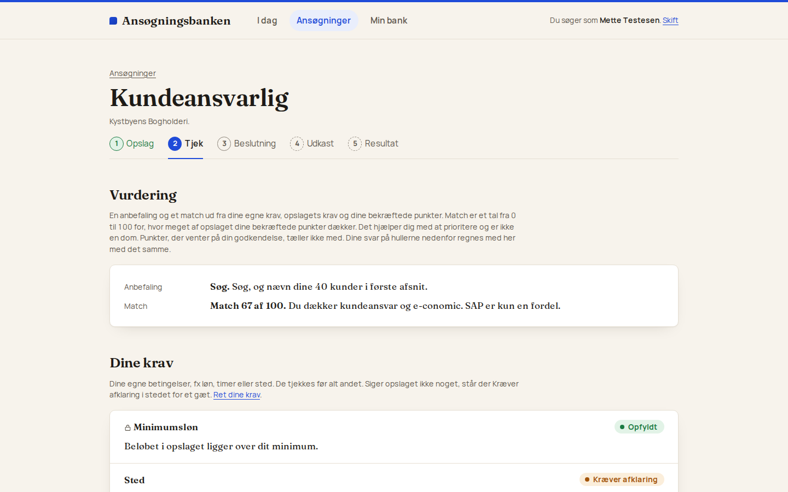
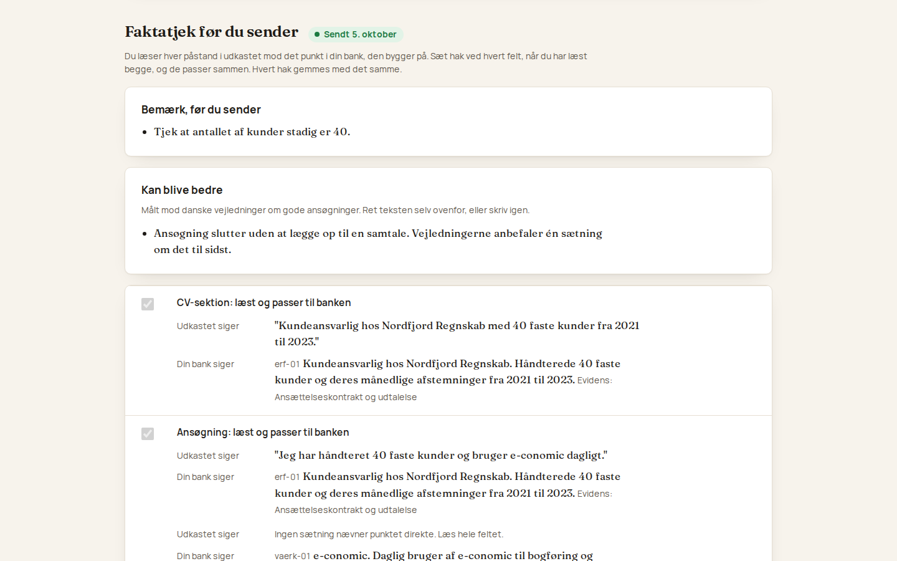
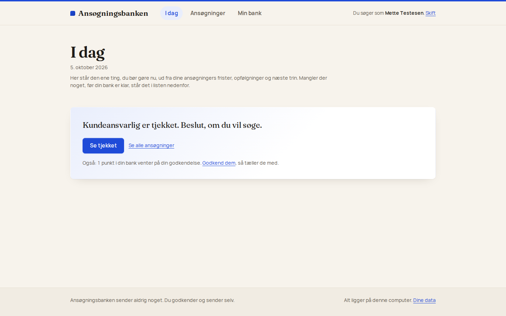
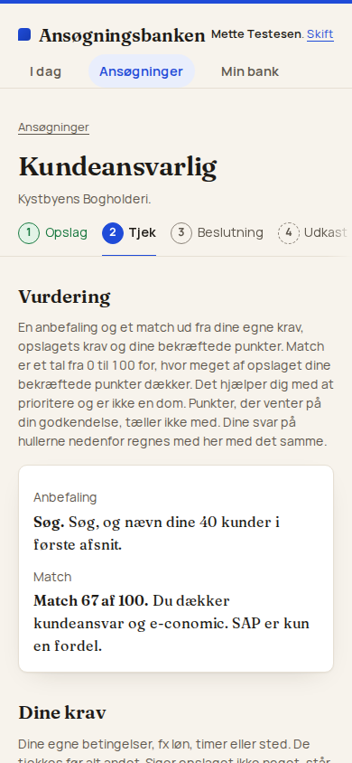

Case 04 · Sideprojekt
Ansøgningsbanken skriver jobansøgninger ud fra det, du faktisk har gjort, og finder aldrig på noget
Ansøgningsbanken er et værktøj, jeg har bygget for at gøre det lettere at søge job uden at pynte og uden at starte fra nul hver gang. Du samler dine erfaringer, resultater og kompetencer ét sted, med en kilde bag hvert punkt. Når du finder et opslag, viser værktøjet, hvad du dækker, og hvad du mangler. Når du har besluttet dig for at søge, skriver det et udkast, hvor hver sætning kan føres tilbage til noget, du har gjort. Den samme kerne hjælper foreninger og kulturaktører med at søge fonde.
- Rolle
- Idé, kravspecifikation, design, kode og test, med Claude Code som udviklingspartner
- Periode
- 29. september – 5. oktober 2026, fire arbejdsdage
- Status
- I brug på mine egne ansøgninger, kører på min egen computer I BRUG
- Kode
- Repo på GitHub, 54 commits, 137 automatiske tests
Personligt sideprojekt. Skærmbilleder og eksempler bruger projektets egne opdigtede testdata (Mette Testesen, Kystbyens Bogholderi og Nordfjord Regnskab); ingen rigtige ansøgninger, CV’er eller personer indgår. Værktøjet sender aldrig noget selv: brugeren godkender og sender uden for systemet. Tallene i casen er talt op fra kodens historik den 5. oktober 2026.
4
arbejdsdage fra det første dokument til et værktøj, jeg selv bruger hver dag
137
automatiske tests, der kører grønt ved hver ændring, plus ni kontroller uden for koden
22
krav i kravspecifikationen, fra bankens opbygning til privatliv og kreditter
11.900
linjer kode, heraf 9.231 Python, og dertil 1.645 linjer dokumentation
01 · Idéen
Hvorfor en ansøgning skal bygges af fakta i stedet for at blive skrevet forfra hver gang
De fleste ansøgninger begynder ved nul. Man genfortæller sin erfaring i nye ord, glemmer de konkrete tal og fristes til at pynte, fordi opslaget beder om noget, man kun halvt har prøvet. AI-værktøjer gør det hurtigere, men ikke mere ærligt, for de skriver lige så flot om det, man aldrig har gjort. Formålet med Ansøgningsbanken er at vende rækkefølgen om. Først samler du fakta, så vurderer du opslaget, så beslutter du dig, og først derefter bliver der skrevet tekst.
Sådan foregår det i dag, og sådan gør Ansøgningsbanken
Hver ansøgning skrives fra bunden
- Erfaringen genfortælles i nye ord hver gang, og de konkrete tal bliver glemt.
- Opslaget beder om noget, man kun halvt kan, og teksten kommer til at pynte lidt.
- Et AI-værktøj skriver flot, men det kan ikke vide, hvad der er sandt.
- Bagefter ved ingen, hvad der virkede, og hvad der gav afslag.
Én bank, mange ansøgninger
- Banken bygges én gang med ét faktum pr. punkt, og hvert punkt har en kilde og en status.
- Opslaget sammenlignes med banken, og hullerne vises ærligt, før der skrives et ord.
- Udkastet skrives kun ud fra bekræftede punkter, og tal, der ikke står i banken, bliver kasseret.
- Hvert resultat gemmes, så man med tiden kan se, hvad der faktisk giver samtale.
Sådan virker det i fire trin
1
Saml dine fakta ét sted
Du lægger dit CV ind eller svarer på korte spørgsmål, og værktøjet foreslår små, konkrete punkter: en erfaring, et resultat eller et værktøj, du kan bruge. Du godkender hvert punkt, før det tæller.
2
Sæt et jobopslag ind
Du indsætter opslaget som tekst, PDF eller link. Værktøjet læser kravene ud af opslaget og sammenligner dem med dine godkendte punkter.
3
Se, hvad du dækker, og beslut dig
Du får en ærlig oversigt over, hvilke krav du dækker, hvilke du mangler, og et match fra 0 til 100. Derefter beslutter du selv, om du vil søge.
4
Få et udkast, du kan stå inde for
Værktøjet skriver en ansøgning ud fra dine godkendte punkter og intet andet. Du tjekker hver påstand mod kilden, retter til og kopierer teksten eller henter den som Word-fil.
Hvem værktøjet er til
Jobsøgende og studerende
- Du søger job eller studiejob som dig selv.
- Banken rummer dine erfaringer, resultater, kompetencer, værktøjer, uddannelse og sprog.
- Skabelonen giver dig en CV-sektion, en ansøgning og en kort besked, du kan sende med.
- Du kan sætte dine egne krav til løn, sted, arbejdstid og kontraktform.
Små organisationer
- Foreninger, pladeselskaber og kulturaktører søger fonde og puljer.
- Banken rummer fakta om organisationen og dens projekter med formål, målgruppe og budget.
- Skabelonen følger fondens egne spørgsmål og tegngrænser.
- 19 håndplukkede fondsprofiler inden for musik og kultur ligger klar.
02 · Banken
Banken består af små, konkrete fakta om dig, og hvert punkt har en kilde
Et punkt i banken er ikke et afsnit fra et CV. Det er ét faktum, du kan stå inde for: hvad du gjorde, hvor, hvornår, og hvad det førte til. Hvert punkt har et kort ID, som udkastene henviser til, og en status, der afgør, om det må bruges.
Et punkt i banken, del for del
erf-011
Bekræftet2
Kundeansvarlig hos Nordfjord Regnskab.3
Håndterede 40 faste kunder og deres månedlige afstemninger fra 2021 til 2023.4
- 1ID ID’et består af en type og et løbenummer. Typen erf står for erfaring, res for resultat, vaerk for værktøj og komp for kompetence. Udkastet henviser til ID’et og ikke til teksten, så kilden altid kan findes igen.
- 2Status Kun bekræftede punkter tæller med i vurderingen og må bruges i et udkast. Et punkt, som værktøjet har foreslået, venter, indtil du har sagt god for det.
- 3Titel Titlen er én linje, der kan stå alene i en liste og i faktatjekket.
- 4Tekst Teksten rummer det konkrete: hvad du gjorde, hvor meget og hvornår. De tal, der står her, er de eneste tal, et udkast må bruge.
- 5Evidens Evidensen er det, der beviser punktet, fx en kontrakt, en udtalelse, et link eller et dokument. Uden evidens får punktet status "mangler evidens".
- 6Nøgleord og kilde Nøgleordene er de ord, ærlighedskontrollen holder øje med i udkastet. Kilden fortæller, hvor punktet kom fra, fx dit CV.
Tre måder at fylde banken, og ingen af dem føles som en formular
A
Læg et dokument ind
Du kan lægge dit CV, din portfolio, en tidligere ansøgning eller en projektbeskrivelse ind.
- Teksten læses ud af PDF-filen, og kontaktoplysninger filtreres fra.
- Værktøjet foreslår punkter med type, tekst, evidens og nøgleord.
- Du godkender, retter eller afviser ét punkt ad gangen.
B
Svar på spørgsmål
Værktøjet interviewer dig med ét konkret spørgsmål ad gangen.
- Et spørgsmål kan lyde: "Fortæl om en gang, du løste et problem for en kunde."
- Dit svar bliver til et foreslået punkt med resultat og sammenhæng.
- Tidligere spørgsmål kan ses igen, uden at AI-modellen skal bruges igen.
C
Svar på et hul
Når et tjek finder et krav, som banken ikke dækker, kan du svare direkte i tjekket.
- Svarer du "jeg har erfaring med det", bliver svaret til et nyt punkt.
- Svarer du "det har jeg ikke", vises kravet ærligt som noget, du mangler.
- Svaret tæller med i vurderingen med det samme.
Et punkts vej fra forslag til noget, der må bruges
03 · Arbejdsgangen
Fem trin fra jobopslag til sendt ansøgning
Hver ansøgning følger de samme fem trin, så du altid kan se, hvor du er, hvad du skal gøre nu, og hvad der sker, når du trykker. Figuren viser, hvad du selv gør, hvad værktøjet regner ud med faste regler, og hvornår AI-modellen er med.
Hvem gør hvad i de fem trin
| 1Opslag | 2Tjek | 3Beslutning | 4Udkast | 5Resultat | |
|---|---|---|---|---|---|
| Dubeslutter og godkender | Du sætter opslaget ind som tekst, PDF eller link og retter typen, hvis værktøjet har gættet forkert på job eller fond. | Du svarer på hullerne: du har det, du har det ikke, det er ikke relevant, eller det skal nævnes ærligt. | Du vælger ja, ikke endnu eller nej. Vælger du "ikke endnu", får du en påmindelse på en dato, du selv sætter. | Du læser hver påstand ved siden af kilden, retter, vælger tone og kopierer teksten eller henter den som Word-fil. | Du markerer ansøgningen som sendt og noterer resultatet, når svaret kommer. |
| Værktøjetfaste regler, uden AI | Værktøjet gætter ud fra ordene, om opslaget er et job eller en fond, og gemmer opslaget med alle afsnit. | Det tjekker dine egne krav først, fx en minimumsløn, med en regel, der aldrig gætter på valuta. Derefter regner det et match fra 0 til 100 ud fra dine bekræftede punkter. | Det holder trinnet Udkast låst, indtil du har sagt ja, og lægger påmindelsen på forsiden, når dagen kommer. | Det kasserer udkast med tal eller værktøjer uden kilde, private oplysninger, pladsholdere eller for lange felter. Knappen Kopiér er låst, indtil alt er tjekket. | Det låser udkastet med et øjebliksbillede af kilderne. Når mindst tre ansøgninger har fået et resultat, viser det mønstre. |
| AI-modellenfår kun data, aldrig instrukser | AI-modellen bruges ikke | Modellen læser opslaget, trækker kravene ud som en liste, mærker hvert punkt som krav eller ønske og sammenligner dem med banken, også når ordvalget er forskelligt. | AI-modellen bruges ikke | Modellen skriver udkastet felt for felt ud fra dine bekræftede punkter og i din tone, med en henvisning til kilden for hvert felt. Den får højst tre forsøg. | AI-modellen bruges ikke |
Sådan bliver et opslag til et match, krav for krav
KravDokumenteret
Erfaring med kundeansvar
KravDokumenteret
Erfaring med e-conomic
ØnskeMangler
Erfaring med SAP
ØnskeIkke afklaret
Projektledelse
- 1Krav eller ønske Modellen mærker hvert punkt ud fra opslagets ordlyd. Er det uklart, om noget er et krav, bliver det et ønske, og uklarheden noteres.
- 2Tre tilstande Dokumenteret betyder, at et bekræftet punkt dækker kravet. Ikke afklaret betyder, at der endnu ikke er et bekræftet punkt. Mangler betyder, at du selv har svaret "det har jeg ikke". En tynd bank giver derfor "ikke afklaret", aldrig "mangler".
- 3Matchet regnes uden AI Kun bekræftede punkter tæller, og et krav vejer dobbelt så meget som et ønske. Et krav uden dækning vises altid over tallet, så et højt match aldrig skjuler en manglende kvalifikation.
match = dækkede point / alle point
krav = 2 point, ønske = 1 point
her: (2 + 2 + 0 + 0) / (2 + 2 + 1 + 1) = 4 / 6 = 67 af 100
krav = 2 point, ønske = 1 point
her: (2 + 2 + 0 + 0) / (2 + 2 + 1 + 1) = 4 / 6 = 67 af 100
Tre mulige beslutninger, og kun én af dem åbner for et udkast
Ja
Ja, jeg søger
Udkastet skrives i næste trin, eventuelt med ét tryk. Det bygger på alle dine bekræftede punkter i den tone, du har valgt, og det kan altid skrives igen med andre valg.
?
Ikke endnu, jeg mangler et svar
Du skriver, hvad der skal afklares, fx lønnen, og sætter en dato. Ansøgningen venter, og forsiden minder dig om den, når dagen kommer.
Nej
Nej, jeg søger ikke
Ansøgningen flyttes til Afsluttet med en valgfri begrundelse. Intet slettes, og du kan fortryde valget.
04 · Ærlighed
Sådan holdes udkastet ærligt
Modellen får kun dine bekræftede punkter, opslaget og den tone, du har valgt. Men en henvisning til et punkt beviser ikke, at påstanden er rigtig. "Deltog i et projekt med 20 deltagere" må ikke blive til "ledede et team på 20", selv om både punktet og tallet findes. Derfor kører der faste kontroller, efter at modellen har skrevet, og til sidst laver du selv et faktatjek.
Tre regler, der gælder for alt i værktøjet
1
Alt har en kilde
Ingen sætning i et udkast står uden et punkt i banken bag sig. Tal, værktøjer og resultater, der ikke kan spores, bliver ikke sendt videre.
2
Mennesket beslutter
Værktøjet foreslår, og du godkender. Det sender aldrig noget selv, og status "sendt" kan kun sættes af dig.
3
Struktur i stedet for prompts
Du skal hverken skrive instrukser til en AI eller forstå, hvordan den virker. Strukturen er produktet.
Fem kontroller mellem modellens svar og den tekst, du kan kopiere
1 · Modellen skriverUdkastet skrives felt for felt i et fast svarformat, og hvert felt angiver de punkter, det bygger på.
2 · KildekontrolHvert navngivet værktøj, system og tal skal have et punkt bag sig. Listen af kontrolord bygges ud fra din egen bank.
3 · TalkontrolHvert tal skal stå ordret i et af de brugte punkter. Ellers kasseres udkastet, uden skøn og uden AI.
4 · Private oplysninger og formEn minimumsløn må aldrig stå i teksten, pladsholdere som [X] afvises, tegngrænser håndhæves, og et "deltog", der er blevet til "ledede", markeres.
5 · Dit faktatjek"Udkastet siger" står ved siden af "Din bank siger". Knapperne Kopiér og Word låses først op, når alle felter er tjekket.
Faktatjekket viser hver påstand ved siden af kildens egen ordlyd
Udkastet siger"Jeg har håndteret 40 faste kunder og bruger e-conomic dagligt. Det betyder, at jeg kan tage jeres kunder fra dag ét."Din bank sigererf-01Kundeansvarlig hos Nordfjord Regnskab. Håndterede 40 faste kunder og deres månedlige afstemninger fra 2021 til 2023.
vaerk-01e-conomic. Daglig bruger af e-conomic til bogføring og afstemning siden 2021.
vaerk-01e-conomic. Daglig bruger af e-conomic til bogføring og afstemning siden 2021.
Udkastet siger"Jeg så jeres opslag og vil gerne tage en kort snak om rollen som kundeansvarlig."Din bank sigererf-01Kundeansvarlig hos Nordfjord Regnskab. Håndterede 40 faste kunder og deres månedlige afstemninger fra 2021 til 2023.
Bemærk, før du senderTjek, at antallet af kunder stadig er 40. · Ansøgningen slutter uden at lægge op til en samtale; danske vejledninger anbefaler én sætning om det til sidst.
Hvad modellen får at se, og hvad den aldrig får
Det, modellen får
- Opslagets tekst, mærket som data.
- Dine bekræftede punkter med ID, tekst og nøgleord.
- Dine offentlige krav, fx "Aarhus eller remote".
- Din tone og op til fem stilreferencer, mærket "kun stil".
- Ved et tjek også punkter med kilde, som endnu ikke er godkendt, så de kan foreslås til godkendelse.
Det, modellen aldrig får
- Beløbet på en privat minimumsløn, eller at den findes, når der skrives tekst.
- Telefonnumre og e-mails fra de dokumenter, du har lagt ind.
- Punkter, du ikke har godkendt, når der skrives udkast.
- Fakta fra stilreferencerne; navne, tal og resultater derfra bruges aldrig.
- Instruktioner, der er gemt i et opslag eller et dokument.
05 · Teknikken
Sådan er værktøjet bygget
Alle regler ligger i en kerne, der ikke ved, at der findes et webinterface. Det gør det muligt at teste alle regler uden en browser og at skifte skærmdelen ud senere. Kontrolscriptet nægter at godkende en ændring, hvis kernen henter noget fra skærmlaget.
Værktøjets tre lag og tjenesterne udenom
1Skærmdet, du ser og udfylder
- FastAPI og Jinja2 tegner 29 sider på serveren som almindelig HTML, og siderne virker også uden JavaScript.
- Ét stylesheet på 508 linjer rummer designsystemet "Kobolt på papir" med lyst og mørkt tema og skrifter gemt lokalt.
- 229 linjer JavaScript bruges til ventesider, faktatjek uden genindlæsning og kladder, der gemmes løbende.
2Kernenreglerne, uden viden om skærmen
- bank, analysis og constraints håndterer punkter på tre niveauer, kravudtræk, match og huller samt dine egne krav med den faste beløbskontrol.
- guardrails og templates rummer kilde- og talkontrollen, de private oplysninger og skabelonerne for job og fond med tegngrænser.
- outcomes, funds, users, credits og jobs står for beslutninger og resultater, de 19 fondsprofiler, login med invitationer, kreditter pr. kald og baggrundsjob.
- llm.py er det eneste modul, der taler med AI-modellen.
3Dataén fil på din egen computer
- SQLite med 18 tabeller rummer ansøgere, punkter, krav, opslag, tjek, beslutninger, udkast, resultater, hændelser, fondsprofiler, brugere og kreditter.
- Fire nummererede migreringer udvikler databasen uden at miste data, og hvert sendt udkast gemmes som et øjebliksbillede, så dokumentationen aldrig ændrer sig bagud.
Eksterne tjenester og bibliotekerdet, kernen bruger udefra
- Claude API læser opslag og dokumenter, stiller spørgsmål og skriver udkast, altid i et fast svarformat.
- pypdf læser opslag og CV’er som PDF.
- python-docx eksporterer udkastet som Word-fil.
- Playwright tager skærmbilleder af hver side under gennemgange.
Datamodellen i hovedtræk
De vigtigste tekniske valg, og hvorfor de blev truffet
| Værktøj | Hvad det er | Hvorfor det blev valgt |
|---|---|---|
| Python | Programmeringssproget i hele projektet, både kernen, webdelen og testene. | Reglerne om ærlighed er tekstbehandling og lister, og det er Python god til. Kernen fra det tidligere værktøj var også Python, så den kunne generaliseres i stedet for at blive skrevet om. |
| FastAPI | Et lille webrammeværk, der tager imod formularer og sender sider tilbage. | Det er tyndt nok til at være et rent lag oven på kernen: hver side er en funktion, der kalder kernen og tegner et svar. Det er nemt at teste med en indbygget testklient. |
| Jinja2 i stedet for React | Skabeloner, der bliver til færdig HTML på serveren, før siden sendes til browseren. | Der er intet byggetrin og ingen pakker at vedligeholde, og siderne virker uden JavaScript. Et værktøj, man læser og udfylder, behøver ikke være en app. |
| SQLite | En database, der ligger i én fil på computeren i stedet for på en server. | Version 1 kører lokalt for én konto. En sikkerhedskopi er en kopi af filen, og ingen persondata forlader computeren. Nummererede migreringer udvikler databasen uden at miste data. |
| Claude API med struktureret svar | Anthropics AI-model, kaldt med et fast svarformat (et JSON-skema), så svaret altid har præcis de felter, koden forventer. | Et frit tekstsvar ville kræve gæt om, hvor kravene eller kildehenvisningerne står. Med et skema er svaret data fra første linje. Modellen vælges i opsætningen, ikke i koden. |
| pypdf og python-docx | To små biblioteker: det ene læser tekst ud af PDF-filer, det andet skriver Word-filer. | Opslag og CV’er kommer som PDF, og en færdig ansøgning skal kunne afleveres som Word. Filerne selv gemmes aldrig, kun teksten. |
| pytest og check.sh | 137 automatiske tests og et script med ni kontroller af det, tests ikke dækker. | Scriptet tjekker blandt andet, at appen kun lytter på den lokale maskine, at ingen nøgler, databaser eller CV’er er havnet i Git, at kernen ikke henter noget fra skærmlaget, og at der ikke er tankestreger i brugerfladen. |
| Lokale skrifter, intet udefra | Skrifterne Fraunces og Manrope ligger i projektet, og siderne henter intet fra andre domæner. | Sidefoden lover "Alt ligger på denne computer", og det skal også gælde skrifterne. Værktøjet skal ikke fortælle nogen, at man søger job. |
| Login, invitationer og kreditter | Konti med kodeord, invitationskoder fra en adminside og en pris i kreditter for hver gang AI-modellen bruges. | Det er bygget, så værktøjet kan åbnes for andre senere uden at betale for fremmedes brug af modellen. Fem handlinger koster kreditter, saldoen er altid synlig, og når saldoen er nul, kalder knappen ikke modellen. |
06 · Tallene
Projektet i tal
Tallene herunder er ikke anslåede. De er talt direkte i kodens historik og filer samme dag, som casen blev skrevet, den 5. oktober 2026.
Kodelinjer fordelt på sprog, og tests fordelt på det, de beskytter
Linjer pr. filtype
Tests pr. område, 137 i alt
Det, værktøjet skal holde styr på
22krav i kravspecifikationen, K1 til K22, hver mærket SKAL eller BØR
19håndplukkede fondsprofiler inden for musik og kultur, med kriterier, frister og bilag
18tabeller i databasen, fra ansøgere og punkter til udkast, resultater og kreditter
29skærme, hver med en forklaring til den, der bruger værktøjet første gang
07 · Sådan ser det ud
Skærmbilleder fra værktøjet, med opdigtede testdata
Skærmbillederne er taget fra en kørende udgave med projektets egne testdata og en opdigtet AI-model. Designet hedder "Kobolt på papir": en papirfarvet baggrund, hvide kort, kobolt på det, man kan trykke på, og statusser skrevet som ord med en farvet prik, aldrig som farve alene.




08 · Forløbet
Fire arbejdsdage fra det første dokument til et værktøj i brug
Projektet blev bygget i fire sessioner over en uge. Kodens historik er tidslinjen: 54 gemte ændringer fra 29. september til 5. oktober, hver mærket med nummeret på den opgave i planen, den løste. Dokumentationen kom først, og brugen af værktøjet styrede resten.
Gemte kodeændringer pr. arbejdsdag, 54 i alt
15
29. sep.
dokumentation og hele kernen
1
30. sep.
det første webinterface
20
4. okt.
gennemgang, projekter og fonde
18
5. okt.
brugere, kreditter, nyt design og rettelser efter brug
pause: 0 dagepause: 3 dagepause: 0 dage
29. september
Dag 1 · Først dokumenterne, så kernenDagen begyndte med fem dokumenter: 22 krav, en designstandard med en ordliste fra systemord til brugerord, en arkitektur med datamodel, skrivereglerne for modellen og en opgaveliste. Derefter blev hele kernen bygget med tests fra start, og hele forløbet blev kørt fra kommandolinjen på et opdigtet opslag.
30. september
Dag 2 · En rigtig webapp frem for et hurtigt prototypeværktøjValget faldt på en webapp med sider, der tegnes på serveren, i stedet for et prototypeværktøj som Streamlit. Baggrundsjob, låste sendte udkast og faktatjekket med kilder krævede mere kontrol, end et hurtigere værktøj ville give. Første besøg, Min bank og de fem trin blev bygget i én session.
4. oktober
Dag 3 · En gennemgang fra otte vinkler og udvidelsen til fondeEn gennemgang af alle skærme fra otte vinkler gav 110 fund, som blev til 24 ændringer i designsystemet og rettelser på 15 sider. Skrifterne blev lagt lokalt, fejl vises nu ved det felt, de hører til, og intet går tabt ved en fejl. Samme dag kom projekter for organisationer, fondsskabelonen med fondens egne skemafelter, 14 fondsprofiler og de første mønstre fra resultatsporingen.
5. oktober
Dag 4 · Den første rigtige brug, og alt det, der føltes tungtTi fund fra rigtige opslag blev rettet i tre runder samme dag. Dertil kom login med invitationer og kreditter, beskyttelse mod forfalskede formularer, kvalitetsrammen fra danske vejledninger og det varmere design "Kobolt på papir". Om aftenen fulgte en sidste gennemgang af alle skærme med fem små rettelser.
09 · Grænser og fravalg
Det, værktøjet ikke gør endnu
Det kører på min egen computer, ikke på nettet
Login, invitationer, kreditter og beskyttelse mod forfalskede formularer er bygget, så værktøjet kan åbnes for andre. Det, der mangler, er drift: en server med HTTPS foran, en daglig sikkerhedskopi af databasen og en plan for, hvad brugen af AI-modellen må koste.
Fondsdelen er bygget, men ikke prøvet på en rigtig ansøgning
Skabelonen følger fondens struktur, svarer på vurderingskriterierne ét ad gangen og holder tegngrænserne, og 19 profiler ligger klar. Den første rigtige fondsansøgning venter på, at en runde åbner.
Et tjek tager op til et minut
Modellen læser hele opslaget hver gang. Værktøjet skjuler det ikke bag en spinner, men viser trinene og lader dig forlade siden. Hurtigere ville kræve, at kravudtrækket blev sprunget over, og det ville gå ud over ærligheden.
Værktøjet er kun så godt som banken
En tynd bank giver "ikke afklaret" på det meste, og det er med vilje: værktøjet gætter aldrig, at du kan noget. Den første ansøgning er derfor den tungeste. Målet er under et kvarter fra oprettelse til det første tjek med et CV.
10 · Kontakt